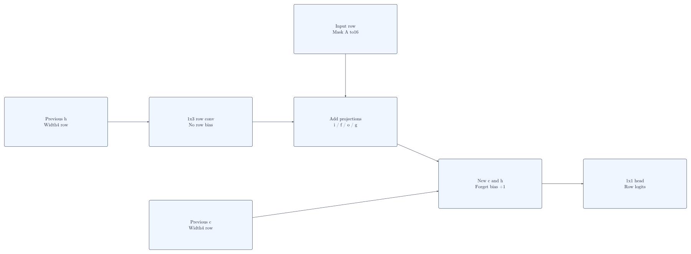
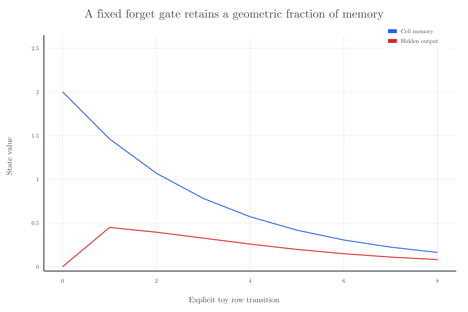
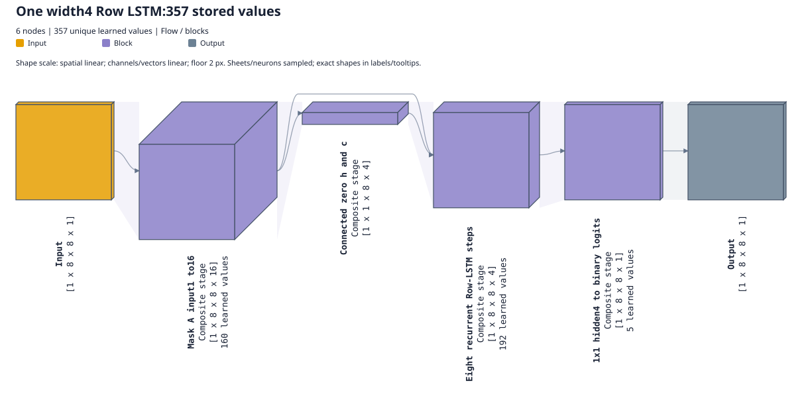
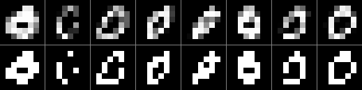
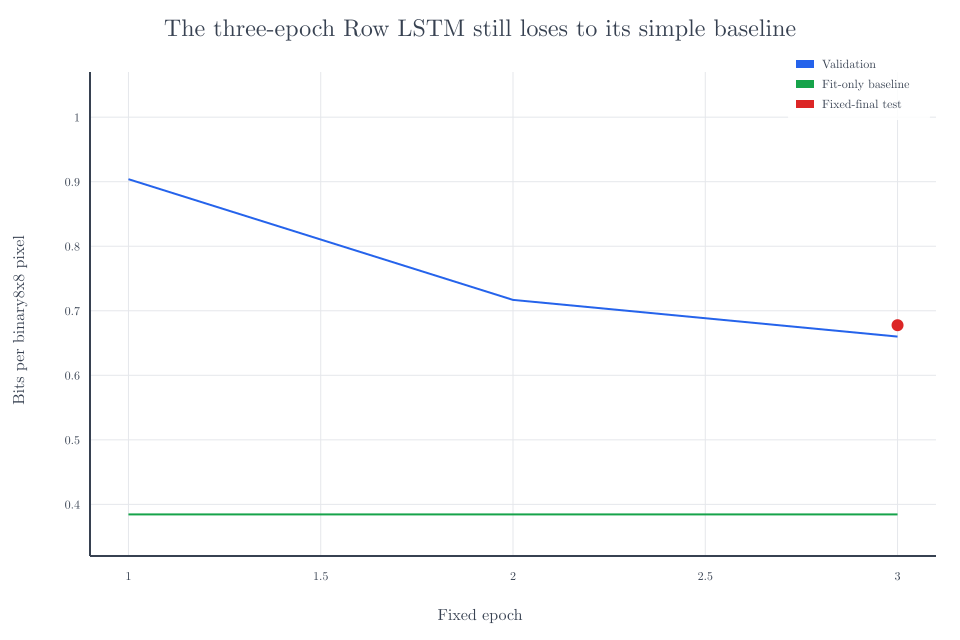
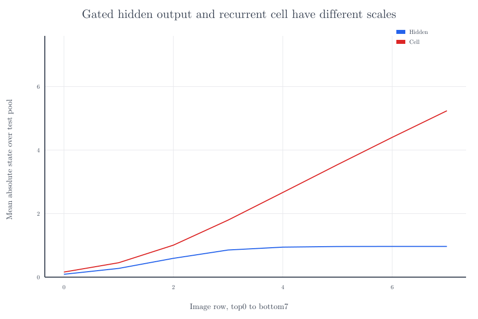
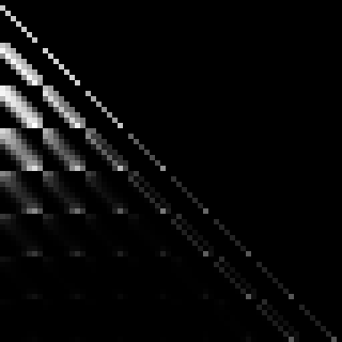
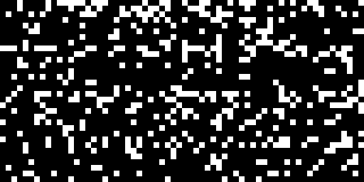
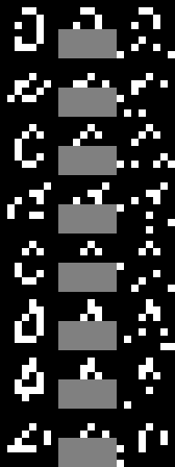

PixelRNN: A Causal Row-LSTM Image Density
Abstract
A Row LSTM processes image rows sequentially while advancing every column in a row together. A masked input convolution excludes the current and future raw pixels; a1x3 convolution of the previous hidden row carries vertical context. This compact native PixelRNN has357 stored values, four state channels and a Bernoulli head on deterministic binary8x8 MNIST images. A worked memory example precedes the real data. The complete program exposes all96 Adam writes and all64 raster-sampling steps. Exact causal checks, restored checkpoints and matching source outputs establish numerical fidelity. The fixed-final test loss is.67764 bits per binary pixel, worse than the fit-only independent Bernoulli baseline's .38445; the small run does not establish realistic digit generation.
Recur over rows while predicting only from raster history
[van den Oord, Kalchbrenner and Kavukcuoglu, Pixel Recurrent Neural Networks (2016)](https://arxiv.org/abs/1601.06759) models images through explicit pixel dependencies. This source teaching variant uses one width4 Row-LSTM layer and a binary head. It is not the paper's12-layer RGB architecture, a diagonal BiLSTM or a classifier. There are no labels, pretrained weights, normalization, pooling, dropout or batch-coupled statistics in the model.
A biased3x3 mask-A input convolution maps one gray channel to16 gate features. At position(r,c), its raw receptive field includes the row above and the current-left site, never the current or future pixel. The previous hidden row is convolved with an unbiased1x3 kernel4→16. This may read neighboring columns in the previous row; every such raw row is already in the raster past. Each current row's columns advance in parallel, with no same-row hidden recurrence. After all eight rows, a biased1x1 hidden4→1 head emits Bernoulli logits.
#include <dm/dm.hpp>
int main(){
std::filesystem::create_directories("build");
dm::graphics::Diagram d(72,1800);dm::graphics::DiagramNodeStyle s;
s.width=10;s.height=4.8;s.font_size=32;
d.node("h",{-22,2},"Previous h\nWidth4 row",s)
.node("conv",{-8,2},"1x3 row conv\nNo row bias",s)
.node("input",{6,11},"Input row\nMask A to16",s)
.node("gates",{6,2},"Add projections\ni / f / o / g",s)
.node("cell",{-8,-8},"Previous c\nWidth4 row",s)
.node("update",{20,-4},"New c and h\nForget bias +1",s)
.node("head",{34,-4},"1x1 head\nRow logits",s)
.edge("h","conv").edge("conv","gates").edge("input","gates")
.edge("gates","update").edge("cell","update").edge("update","head")
.save_svg("build/pr_method.svg");
}
Derive one step and hand-check the memory path
Let F_r be the masked input projection and W_row the recurrent kernel. Split A_r=F_r+Conv(h_(r−1),W_row) into four contiguous width4 groups:
The ordering is *input, forget, output, candidate*. The fixed+1 forget offset is not a learned recurrent bias. If both projections and W_row are zero, i=o=.5, g=0 and f=sigmoid(1)=.73105858. Starting from an explicitly supplied c_0=2 gives c_1=1.46211716 and h_1=.5*tanh(c_1). After k such steps, c_k=2*fk and its derivative with respect to c_0 is fk. This exact toy fixes the gates; the fitted model also has derivatives through its recurrent gates.
The real model starts from zero, using the source's *first input row features times zero* for both h and c. This retains a connected, exactly zero input path, including signed-zero arithmetic. It creates no learned initial state. The nonzero toy state below is supplied solely to make forgetting visible.
#include <dm/dm.hpp>
int main(){
namespace n=dm::nn;auto t=n::DType::Float64;
auto initial=n::full({1,1,1,4},2,t).requires_grad_();
auto h=n::zeros({1,1,1,4},t),c=initial;
const auto input=n::zeros({1,1,1,16},t),kernel=n::zeros({1,3,4,16},t);
std::vector<double> rows{0},cells{2},hidden{0};
for(int row=1;row<=8;++row){
auto out=n::models::PixelRowLstmStep(input,h,c,kernel);h=out.hidden;c=out.cell;
rows.push_back(row);cells.push_back(n::mean(c).item());hidden.push_back(n::mean(h).item());
}
auto partial=n::grad(n::sum(c),{initial})[0];
auto f=n::sigmoid(n::ones({1},t));auto expected=n::pow(f,8);
if(std::abs(partial.to_vector<double>()[0]-expected.item())>1e-14)throw std::runtime_error("Forget memory partial");
auto loss=n::models::BernoulliPixels(n::zeros({1,8,8,1},t),n::ones({1,8,8,1},t)).loss;
auto plot=dm::graphics::RPlot::create();
plot.lines(rows,cells,"Cell memory",{37,99,235}).lines(rows,hidden,"Hidden output",{220,38,38})
.y_limits(-.05,2.65).x_label("Explicit toy row transition").y_label("State value")
.title("A fixed forget gate retains a geometric fraction of memory").save_svg("build/pr_memory_toy.svg");
std::print("Forget gate={:.8f}; cell after8={:.8f}; initial-cell partial={:.8f}.\nZero-logit binary NLL={:.8f} nats/pixel, or1 bit.\n",f.item(),cells.back(),partial.to_vector<double>()[0],loss.item());
}Forget gate=0.73105858; cell after8=0.16317267; initial-cell partial=0.08158633. Zero-logit binary NLL=0.69314718 nats/pixel, or1 bit.

Trace the executed native model and count the actual leaves
The source creates input/W[3,3,1,16], input/b[16], row/W[1,3,4,16], output/W[1,1,4,1] and output/b[1], in that order. Missing kernels use normal(0,.1), biases zero, store seed8303. This is144+16+192+4+1=357 values in five leaves. Mask A permits four of nine input-kernel cells, so80 input weights are forbidden and277 values are active. There is no row/b or initial-state leaf.
The executed architecture collapses the eight true row transitions into one composite sequence block. The preceding one-row method diagram and worked transition expose its mechanics. The public API returns the actual zero-state, input-gate, recurrent-gate, hidden, cell and logit boundaries, retaining their first and higher derivative paths.
#include <dm/dm.hpp>
int main(){
namespace n=dm::nn;n::ParameterStore p(8303);
n::Module model([&](const n::Tensor& x){
auto out=n::models::PixelRnn(p,x);
n::model_stage("Mask A input1 to16",x,out.input_gates);
n::model_stage("Connected zero h and c",out.input_gates,out.initial_hidden);
n::model_stage("Eight recurrent Row-LSTM steps",std::vector<n::Tensor>{out.input_gates,out.initial_hidden},out.hidden);
return n::model_stage("1x1 hidden4 to binary logits",out.hidden,out.logits);
},"One width4 Row LSTM:357 stored values");
n::ModelPlotOptions options;options.detail=n::ModelPlotDetail::Blocks;
options.sizing.minimum_extent=2;options.sizing.max_planes=4;
auto fig=model.plot(n::zeros({1,8,8,1}),options);
if(fig.parameter_count()!=357||p.size()!=5)throw std::runtime_error("Source census");
fig.save_svg("build/pr_network.svg");
}
Fit the original binary experiment with visible optimizer writes
The canonical native MNIST saliency preparation supplies1000 balanced fit, 200 validation and200 disjoint official-test rows, with source IDs and provenance. BinaryPixels performs Double half-pixel28→8 bilinear arithmetic, one Float32 cast and threshold gray>=.5. All model fitting, preprocessing, likelihoods and sampling decisions below use dm::nn tensors. Host containers only transport row indices, named tensors, history and figure values.
The source's optional TensorFlow initialization directory has no recorded initial arrays, so its auto default uses native seed8303. BatchOrder seed8311, batch size32 and three fixed epochs give31 full batches plus an8-row batch each epoch:96 Adam(.003) writes. Adam uses betas(.9,.999),epsilon1e−8 and no weight decay. The source selects epoch3 in advance, without validation-based stopping. Every partial, write and optimizer counter is saved, and all80 forbidden input weights are checked at every update.
For a binary image, p(x)=product_j Bernoulli(x_j;sigmoid(z_j(x_<j))). The teacher-forced scalar objective is
Per-image NLL sums64 terms; training NLL averages all rows and pixels. Divide nats by log(2) for bits per *binary8x8 pixel*, not per original28x28 gray pixel. At zero logit either target costs log(2) nats, one bit, as the worked check confirms.
The full raster sampler stays visible: draw one complete midpoint-MT Double[N,64] bank, evaluate the current canvas at each site, retain its conditional and write [u<p]. Seed8329 is reused for final32-sample and three16-sample epoch banks. Seed8353 supplies eight completions with their first32 truth sites preserved. A completion still draws all64 uniform columns; prefix conditionals stay zero. Only the prefix enters the canvas, never future truth or display-gray unknowns.
#include <dm/dm.hpp>
namespace n=dm::nn;namespace m=n::models;
using T=n::Tensor;using A=std::map<std::string,T>;namespace fs=std::filesystem;
void Save(const fs::path& file,const A& fields){
n::NamedTensors named;for(const auto& [key,value]:fields)named.emplace_back(key,value);
n::save_npz(file.string(),named);
}
A Weights(const n::ParameterStore& p){
A out;for(const auto& name:p.names())out.emplace(name,p.at(name).detach().clone());return out;
}
bool Equal(const A& a,const A& b){
if(a.size()!=b.size())return false;
for(const auto& [key,value]:a)if(!b.count(key)||!n::equal_bits(value,b.at(key)))return false;
return true;
}
A Partials(const n::ParameterStore& p,const std::vector<T>& g){
A out;for(std::size_t k=0;k<g.size();++k)out.emplace(p.names()[k],g[k].detach());return out;
}
A Evaluate(n::ParameterStore& p,const T& x){
n::NoGradGuard guard;auto o=m::PixelRnn(p,x);auto l=m::BernoulliPixels(o.logits,x);
return {{"logits",o.logits},{"hidden",o.hidden},{"cell",o.cell},{"input_gates",o.input_gates},
{"probability",l.probability},{"per_image_nll",l.per_image_nll},{"loss",l.loss}};
}
A Sample(n::ParameterStore& p,int count,std::uint32_t seed,const T& prefix={},int prefix_size=0){
n::NoGradGuard guard;
auto ordinal=n::reshape(n::arange(0,64),{1,64});
T canvas=n::zeros({count,64}),conditionals=n::zeros({count,64});
const auto bank=m::BinaryPixelUniforms(count,seed);
if(prefix_size)canvas=n::where(n::less(ordinal,prefix_size),n::reshape(prefix,{count,64}),canvas);
for(int site=prefix_size;site<64;++site){
auto logits=m::PixelRnn(p,n::reshape(canvas,{count,8,8,1})).logits;
auto q=n::slice_axis(n::reshape(n::sigmoid(logits),{count,64}),1,site,site+1);
auto u=n::slice_axis(bank,1,site,site+1);
auto bit=n::cast(n::less(u,n::cast(q,n::DType::Float64)),n::DType::Float32);
auto at_site=n::equal(ordinal,site);
conditionals=n::where(at_site,q,conditionals);
canvas=n::where(at_site,bit,canvas);
}
return {{"images",n::reshape(canvas,{count,8,8,1})},{"uniform",bank},{"conditionals",conditionals}};
}
int main(){
const fs::path root="build/pixel_rnn";fs::create_directories(root/"phases");
n::set_num_threads(4);
const fs::path data_root=dm::datasets::prepare_example_data("mnist-assets");
const auto pools=m::LoadSaliency(data_root/"saliency");
std::vector<T> binary;A data;
const std::vector<std::string> split{"fit","validation","test"};
for(int k=0;k<3;++k){
auto prep=m::BinaryPixels(pools[k].images);binary.push_back(prep.images);
data[split[k]+"_original"]=pools[k].images;data[split[k]+"_gray"]=prep.gray;
data[split[k]+"_images"]=prep.images;data[split[k]+"_labels"]=pools[k].labels;
data[split[k]+"_source_ids"]=pools[k].source;
}
Save(root/"data.npz",data);
n::ParameterStore p(8303);
{n::NoGradGuard guard;m::PixelRnn(p,n::zeros({1,8,8,1}));}
const auto initial=Weights(p);Save(root/"initial_arrays.npz",initial);
Save(root/"initial_outputs.npz",Evaluate(p,binary[2]));
n::OptimizerConfig config;config.kind=n::OptimizerKind::Adam;
n::Optimizer optimizer(p,.003,config);
n::BatchOrder order(1000,32,8311);std::vector<std::int64_t> rows;
std::ofstream batches(root/"batches.tsv"),history(root/"history.tsv");history.precision(17);
batches<<"epoch\tstep\trow\tsource_id\n";
history<<"epoch\tvalidation_nll_per_binary_pixel\tvalidation_bits_per_binary_pixel\n";
auto source=pools[0].source.to_vector<std::int32_t>();
std::vector<double> val_bits;T first;int updates=0;
for(int epoch=1;epoch<=3;++epoch){
order.begin_epoch();
for(;;){
rows=order.next();if(rows.empty())break;
const auto x=n::take_rows(binary[0],rows);
if(!updates){first=x;Save(root/"first_batch.npz",{{"images",x}});
Save(root/"first_forward.npz",Evaluate(p,x));}
auto output=m::PixelRnn(p,x);auto objective=m::BernoulliPixels(output.logits,x);
auto gradients=n::grad(objective.loss,p.parameters());
const auto phase=root/"phases"/("batch"+std::to_string(updates));
Save(phase.string()+"-gradient.npz",Partials(p,gradients));
if(!updates)Save(root/"initial_gradients.npz",Partials(p,gradients));
optimizer.step(gradients);
const auto after=Weights(p);Save(phase.string()+"-after.npz",after);
Save(phase.string()+"-iterations.npz",{{"iterations",n::from_vector(std::vector<std::int64_t>{optimizer.iterations()},{1})}});
if(!updates)Save(root/"first_after.npz",after);
for(const auto& [key,value]:initial){
if(key!="input/W")continue;
auto mask=m::CausalPixelMask(1,16,false);
auto forbidden=n::equal(mask,0);
if(!n::equal_bits(n::where(forbidden,value,n::zeros_like(value)),
n::where(forbidden,after.at(key),n::zeros_like(value))) ||
n::max(n::abs(n::where(forbidden,Partials(p,gradients).at(key),n::zeros_like(value)))).item()!=0)
throw std::runtime_error("Masked coordinates changed");
}
for(auto row:rows)batches<<epoch<<'\t'<<updates<<'\t'<<row<<'\t'<<source[row]<<'\n';
++updates;
}
const double nll=Evaluate(p,binary[1]).at("loss").item();
history<<epoch<<'\t'<<nll<<'\t'<<nll/std::log(2.)<<'\n';val_bits.push_back(nll/std::log(2.));
Save(root/("epoch"+std::to_string(epoch)+"_arrays.npz"),Weights(p));
Save(root/("epoch"+std::to_string(epoch)+"_samples.npz"),Sample(p,16,8329));
}
if(updates!=96 || optimizer.iterations()!=96)throw std::runtime_error("96 Adam updates");
p.save((root/"final.npz").string());
Save(root/"final_gradients.npz",Partials(p,n::grad(m::BernoulliPixels(m::PixelRnn(p,first).logits,first).loss,p.parameters())));
n::ParameterStore restored(8303);
{n::NoGradGuard guard;m::PixelRnn(restored,n::zeros({1,8,8,1}));}
restored.load((root/"final.npz").string(),true);
if(!Equal(Weights(p),Weights(restored)))throw std::runtime_error("Fresh restore");
const auto before=Weights(restored),out=Evaluate(restored,binary[2]);
Save(root/"model_arrays.npz",before);Save(root/"outputs.npz",out);
auto single=n::take_rows(binary[2],{0});
auto probability=Evaluate(restored,single).at("probability");
if(n::max(n::abs(probability-n::take_rows(out.at("probability"),{0}))).item()>1e-6)
throw std::runtime_error("Batch independence");
A causal{{"images",single},{"probability",probability}};std::vector<T> jacobian;
auto ordinal=n::reshape(n::arange(0,64),{1,8,8,1});
for(int site=0;site<64;++site){
auto input=single.detach().clone().requires_grad_();
auto logits=n::reshape(m::PixelRnn(restored,input).logits,{1,64});
auto gradient=n::reshape(n::grad(n::sum(n::slice_axis(logits,1,site,site+1)),{input})[0],{64});
if(n::max(n::abs(n::slice_axis(gradient,0,site,64))).item()!=0)
throw std::runtime_error("Current/future derivative");
auto changed=n::where(n::greater_equal(ordinal,site),1-single,single);
auto cp=Evaluate(restored,changed).at("probability");
if(!n::equal_bits(n::slice_axis(n::reshape(cp,{64}),0,0,site+1),
n::slice_axis(n::reshape(probability,{64}),0,0,site+1)))
throw std::runtime_error("Future-flip prefix invariant");
if(site%8==0){causal["changed_input"+std::to_string(site)]=changed;
causal["changed_probability"+std::to_string(site)]=cp;}
jacobian.push_back(gradient.detach());
}
causal["jacobian"]=n::stack(jacobian);Save(root/"causality.npz",causal);
auto samples=Sample(restored,32,8329);Save(root/"samples.npz",samples);
if(!Equal(samples,Sample(restored,32,8329)))throw std::runtime_error("Repeated sample bank/conditionals");
auto truth=n::take_rows(binary[2],{0,1,2,3,4,5,6,7});
auto completion=Sample(restored,8,8353,truth,32);completion["truth"]=truth;
Save(root/"completions.npz",completion);
if(!n::equal_bits(n::slice_axis(n::reshape(truth,{8,64}),1,0,32),
n::slice_axis(n::reshape(completion.at("images"),{8,64}),1,0,32)))
throw std::runtime_error("Observed prefix preservation");
auto observed=n::where(n::less(ordinal,32),truth,n::full(truth.shape(),.5));
auto gallery=n::reshape(n::stack({truth,observed,completion.at("images")},1),{24,8,8,1});
Save(root/"completion_gallery.npz",{{"images",gallery}});
n::save_image_grid(n::tile(samples.at("images"),{1,1,1,3}),(root/"samples.png").string(),8,0,1,0,220/255.,8);
n::save_image_grid(n::tile(gallery,{1,1,1,3}),(root/"completions.png").string(),3,0,1,0,220/255.,8);
if(!Equal(before,Weights(restored)))throw std::runtime_error("Inference wrote parameters");
{n::NoGradGuard guard;
auto posterior=(n::sum(n::cast(binary[0],n::DType::Float64),{0})+.5)/1001.;
auto target=n::cast(binary[2],n::DType::Float64);
auto baseline=-n::mean(target*n::log(posterior)+(1-target)*n::log1p(-posterior));
Save(root/"baseline.npz",{{"probability",n::reshape(n::cast(posterior,n::DType::Float32),{64})}});
Save(root/"summary.npz",{{"validation_bits",n::from_vector(val_bits,{3})},
{"test_bits",n::cast(out.at("loss"),n::DType::Float64)/std::log(2.)},
{"baseline_bits",baseline/std::log(2.)}});
std::print("| Fixed protocol | Value |\n|---|---:|\n| Fit / validation / test |1000 /200 /200|\n| Stored / active / masked values |357 /277 /80|\n| Epochs / Adam updates |3 /96|\n| Full causal Jacobian entries checked |4096|\n| Test bits per binary pixel |{:.6f}|\n| Fit-only Bernoulli baseline |{:.6f}|\n",out.at("loss").item()/std::log(2.),baseline.item()/std::log(2.));
}
}| Fixed protocol | Value |
|---|---|
| Fit / validation / test | 1000 /200 /200 |
| Stored / active / masked values | 357 /277 /80 |
| Epochs / Adam updates | 3 /96 |
| Full causal Jacobian entries checked | 4096 |
| Test bits per binary pixel | 0.677641 |
| Fit-only Bernoulli baseline | 0.384447 |
Inspect the exact input domain and the fixed-final density result
The top row below contains eight actual fit-pool gray8x8 images and the bottom row their deterministic binary thresholds. The saved data archive also retains all original28x28 images, labels and source IDs. Digit labels are metadata only; PixelRNN does not use them for fitting or sampling.
#include <dm/dm.hpp>
int main(){
namespace n=dm::nn;std::map<std::string,n::Tensor> a;
for(auto& [key,value]:n::load_npz("build/pixel_rnn/data.npz"))a.emplace(key,value);
auto rows=std::vector<std::int64_t>{0,1,2,3,4,5,6,7};
auto images=n::concat({n::take_rows(a.at("fit_gray"),rows),n::take_rows(a.at("fit_images"),rows)},0);
n::save_image_grid(images,"build/pr_data.png",8,0,1,1,.5,8);
}
The fit-only independent Bernoulli baseline has one parameter per site, q_j=(count_j+.5)/1001. It evaluates test NLL with its unrounded Double posterior; its saved probability image is separately Float32. It therefore preserves the source scalar protocol rather than recomputing from rounded archived probabilities.
#include <dm/dm.hpp>
int main(){
namespace n=dm::nn;std::map<std::string,n::Tensor> a;
for(auto& [key,value]:n::load_npz("build/pixel_rnn/summary.npz"))a.emplace(key,value);
double baseline=a.at("baseline_bits").item(),test=a.at("test_bits").item();
auto plot=dm::graphics::RPlot::create();
plot.lines({1,2,3},a.at("validation_bits").to_vector<double>(),"Validation",{37,99,235})
.lines({1,3},{baseline,baseline},"Fit-only baseline",{22,163,74})
.points({3},{test},"Fixed-final test",{220,38,38},6)
.y_limits(.32,1.07).x_label("Fixed epoch").y_label("Bits per binary8x8 pixel")
.title("The three-epoch Row LSTM still loses to its simple baseline").save_svg("build/pr_history.svg");
}
Observe the row states and verify every causal restriction
The next figure summarizes the fitted model's actual hidden and cell sequences on all200 test images. The hidden state is gated tanh(cell), while cell is an accumulated recurrent state with a different scale. These are state magnitudes, not predicted class probabilities, attribution scores or a proof of long-range memory. Unlike the worked zero-kernel toy, the fitted gates depend on images and earlier hidden rows.
#include <dm/dm.hpp>
int main(){
namespace n=dm::nn;std::map<std::string,n::Tensor> a;
for(auto& [key,value]:n::load_npz("build/pixel_rnn/outputs.npz"))a.emplace(key,value);
auto hidden=n::mean(n::abs(n::cast(a.at("hidden"),n::DType::Float64)),{0,2,3});
auto cell=n::mean(n::abs(n::cast(a.at("cell"),n::DType::Float64)),{0,2,3});
const double high=1.45*n::max(n::concat({hidden,cell},0)).item();
auto plot=dm::graphics::RPlot::create();
plot.lines(n::arange(0,8).to_vector<double>(),hidden.to_vector<double>(),"Hidden",{37,99,235})
.lines(n::arange(0,8).to_vector<double>(),cell.to_vector<double>(),"Cell",{220,38,38})
.y_limits(0,high).x_label("Image row, top0 to bottom7").y_label("Mean absolute state over test pool")
.title("Gated hidden output and recurrent cell have different scales").save_svg("build/pr_states.svg");
}
For every logit j, the program checks all64 raw input derivatives: every current/future entry k>=j is exactly zero. A separate finite-change guard flips all current/future bits and requires every conditional through j to remain bit identical. Thus64 whole-prefix guards complement4096 derivative entries. Single-image inference also matches that image inside the full test batch.
The compact Row LSTM does not necessarily reach every past pixel. Current-row information enters through the input mask's immediate-left site; vertical context spreads through previous-row convolutions. Zeros below the causal diagonal can reflect this finite field or fitted gate/weight values. Strict causality is the required exclusion, not a claim that every earlier input is used.
#include <dm/dm.hpp>
int main(){
namespace n=dm::nn;n::Tensor j;
for(auto& [key,value]:n::load_npz("build/pixel_rnn/causality.npz"))if(key=="jacobian")j=n::abs(value);
auto scaled=n::log1p(100*j);scaled=scaled/n::max(scaled);
n::save_image_grid(n::reshape(scaled,{1,64,64,1}),"build/pr_causality.png",1,0,1,0,0,6);
}
Show all seeded samples and preserve observed prefixes
Every final sample begins from an all-zero canvas. The32 fixed-seed images below are all source samples, without filtering. Checkpoint restoration preserves all five leaves exactly; repeating the sampler reproduces images, uniform banks and retained conditionals bit for bit. All inference leaves fitted weights unchanged.
#include <dm/dm.hpp>
int main(){std::filesystem::copy_file("build/pixel_rnn/samples.png","build/pr_samples.png",std::filesystem::copy_options::overwrite_existing);}
For eight test images, seed8353 draws the unobserved last32 sites after preserving the first32 raster sites exactly. The middle column's gray unknowns below are a display convention only. They are not the sampler canvas and no future truth is supplied after the prefix.
#include <dm/dm.hpp>
int main(){std::filesystem::copy_file("build/pixel_rnn/completions.png","build/pr_completions.png",std::filesystem::copy_options::overwrite_existing);}
Separate numerical fidelity from model quality
A separate development NumPy oracle checks719283 forward values,34986 analytic partials,13 scalar finite differences, all96 Adam writes and3000 fitting-row visits. It checks4096 causal Jacobian entries,64 future-flip guards and5376 sampled pixels across epoch snapshots, final samples and completions. All80 forbidden input weights remain bit identical and their partials are exactly zero. The report must reproduce all22 original archives/2028400 values and288 training captures before the old executable is retired. Data preparation and runtime use the native API, without a TensorFlow dependency or another checkout.
This is a faithful compact Row-LSTM density experiment. Its fixed-final loss remains worse than the fit-only baseline. The linked zero state, gate order, forget offset, row recurrence and causal sampling protocol are verified; the results do not claim classification accuracy, perceptual realism, full-paper PixelRNN performance or evidence that every past pixel influences every logit.